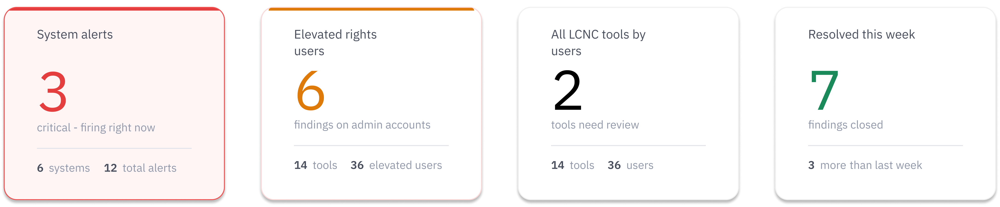
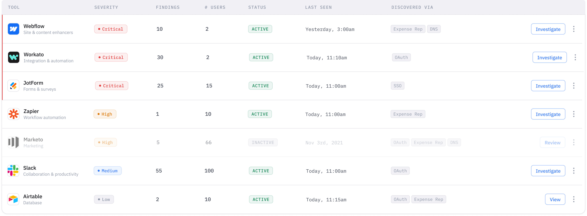
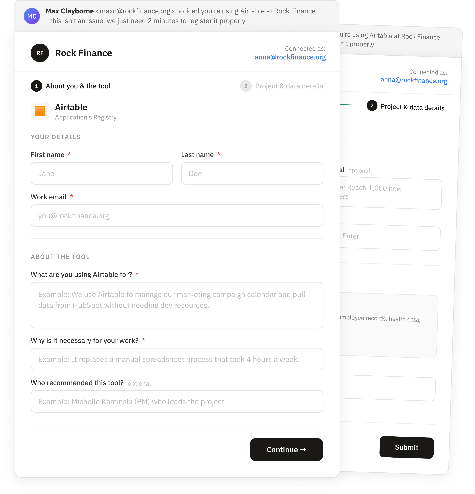

✕
Designing the core monitoring dashboard for a Shadow IT security platform - giving security teams the visibility to catch unauthorized data exposure and act before it escalates.
Yes-Security is a Shadow IT monitoring platform. It watches your network and surfaces every unauthorized tool employees are using - whether IT approved it or not. I owned the design of the core dashboard that security teams use daily to monitor data exposure risk and decide what needs immediate action.
The dashboard was designed with both users in mind - the KPI cards serve the CISO's executive view, while the tool table serves the analyst's operational workflow. One interface, two levels of depth.
When everything looks equally urgent, nothing gets treated that way. And in a Shadow IT dashboard, that is not just bad design - it means unauthorized tools go uninvestigated, data exposure goes undetected, and a hidden risk quietly becomes a breach.
At an early-stage startup, I didn't have access to end users for formal research. Instead I built understanding through two sources: interviews with the founding team and competitive analysis of how leading security platforms handle threat prioritization.
Can a security analyst answer "is anything on fire right now?" within 5 seconds of opening this dashboard? Every design choice was tested against that.
The dashboard had three core design challenges - each one a direct response to what I learned in research. Here is how I solved them.
A security dashboard that tells analysts exactly what needs their attention - and gives them a clear path to act on it, without wading through noise.
The final design makes data exposure risks visible, prioritized, and actionable - giving security managers a single view of every unauthorized tool in their environment, sorted by risk, with immediate paths to investigate.
Each card leads with the alert count as the dominant element. A colored top stripe signals severity at a glance. Supporting context sits quietly below the divider - available but not competing.

Every tool is sorted by severity. Inactive tools recede visually. The action button is always visible - label changes to match the urgency of each row. A kebab menu gives quick access to edit or delete.

The dashboard tells the security team what tools are being used. But it can never tell them why. I designed a second touchpoint - a lightweight form sent directly to the employee via email - that captures the context the automated system can't: what are you using this tool for, what data does it touch, who recommended it?
The employee never needs to log into Yes-Security. They get an email, click a link, fill out a simple form. That's it. The response flows back to the security team and gives them what they need to make a decision: approve the tool, investigate further, or revoke access.

Clarity is a form of speed. Every second of confusion the interface creates is a second an analyst isn't spending on the actual threat.
Without direct user access, stakeholder interviews and competitive analysis become your most powerful research tools. Secondary research isn't a compromise - it's a skill.
Language is a design decision. "Important" vs "Critical" isn't a copy choice - it's a UX choice that affects how fast an analyst responds to a real threat.
If I could continue this project, the next step would be usability testing with real SOC analysts - measuring time-to-prioritization with the dashboard, and validating the severity taxonomy against how analysts actually talk about risk.